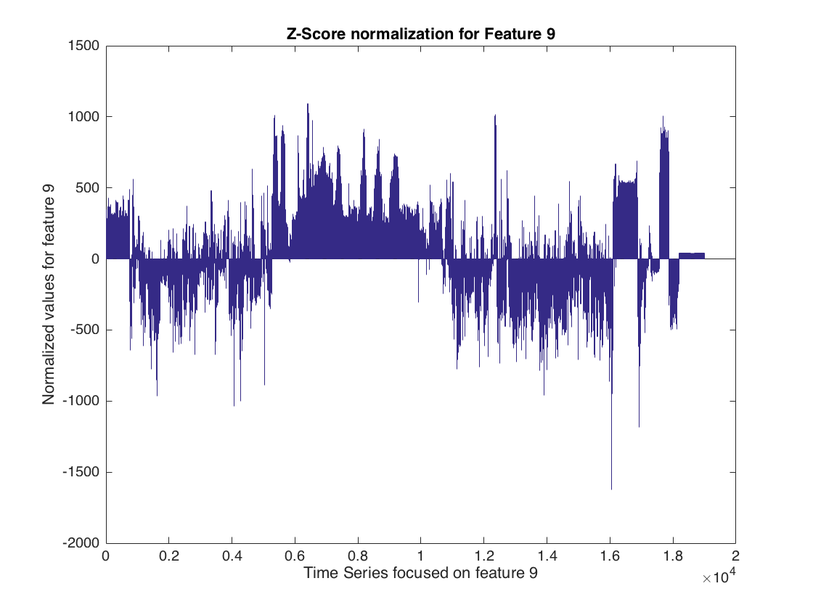
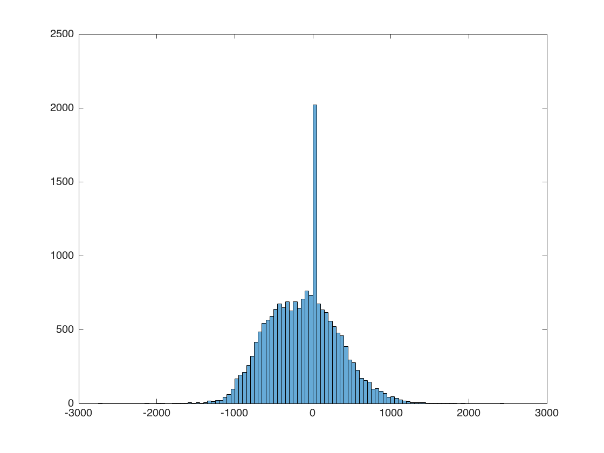

import plotImages.*; % Import data data = importdata('DataA.mat'); % Take the mean with the omitnan data(isnan(data)) = mean(data(1,:), 'omitnan'); [row,col] = find(isnan(data)) % Min-Max Normalization % minA = min(data(:,9)); % maxA = max(data(:,9)); dataNorm = (data(:,9)-mean(data(:,9))/std(data(:,9))); figure bar (dataNorm); title('Z-Score normalization for Feature 9'); xlabel('Time Series focused on feature 9'); ylabel('Normalized values for feature 9'); dataNorm = (data(:,24)-mean(data(:,24))/std(data(:,24))); figure bar (dataNorm); title('Z-Score normalization for Feature 24'); xlabel('Time Series focused on feature 24'); ylabel('Normalized values for feature 24'); histogram(dataNorm); % First plot the oroginal dataset % figure % plot(data); % title('Data values of DatasetA'); % xlabel('Sensors'); % ylabel('Values based on time step'); % calculate Mode for every row including NaN modeData = mode(data,2); % figure % bar(modeData); % title('Mode values for DatasetA'); % xlabel('Sensors'); % ylabel('Mode represented for data captured of sensors'); % take Mean omitting NaN % meanData = mean(data,'omitnan'); % figure % plot(meanData,'*'); % title('Mean values of every column omitting NaN value on DatasetA'); % xlabel('Sensors'); % ylabel('Mean represented for column vectors on DatasetA'); % Replace NaN with Zero % dataZero = data; % dataZero(isnan(dataZero)) = 0; % figure % bar(dataZero); % title('Mean after replacing NaN with Zero'); % xlabel('Sensor Features'); % ylabel('Mean value for fixed NaN with zero'); % % Replacing NaN in origianl Dataset with mean of every row % [row,col] = find(isnan(data)) % data(nanA) = mean(data,2) % figure % plot(dataZero, 's'); % title('Mean after replacing NaN with Mean'); % xlabel('Sensor Features'); % ylabel('Mean value for fixed NaN with Mean'); % medianA(1,i) = median(data,2); % for j=1:19000 % for k=1:81 % indeces(i) = find(isnan(data)); % end % end
row = Empty matrix: 0-by-1 col = Empty matrix: 0-by-1 